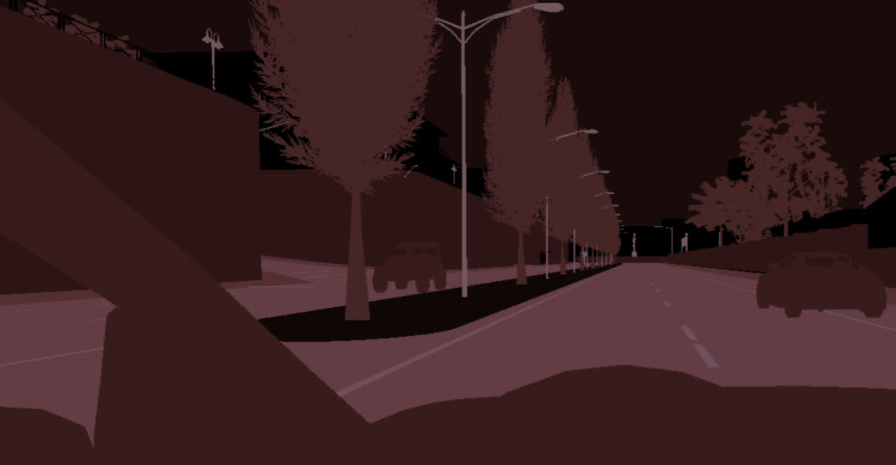
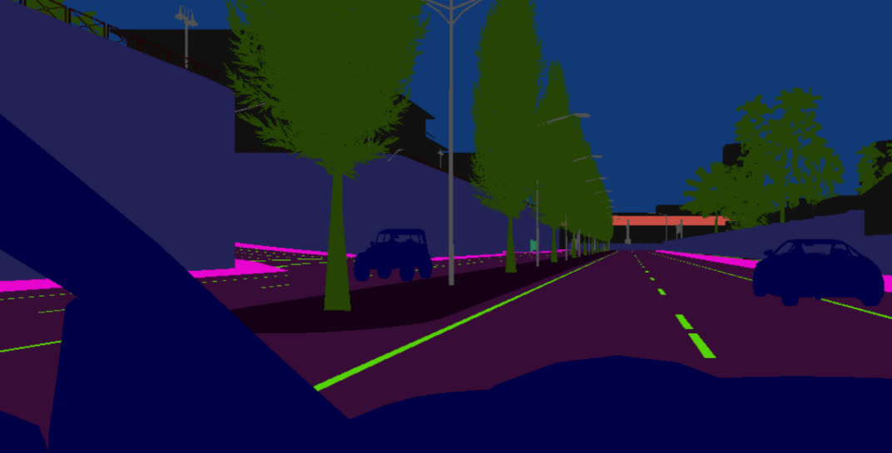

UE4 场景捕获着色器
对于 语义分割相机 等高级传感器，Carla 使用 后处理材质 充当着色器，以最小的性能成本产生高质量的结果。
您可以在 此处 (youtube) 找到有关此主题的 UE4 精彩教程。
无需过多介绍细节，这里保存的后期处理效果材料可作为着色器，获取自定义模板/深度缓冲区等信息并非常有效地进行逐像素计算。
| 描述 | 示例 |
|---|---|
例如，Carla 的 GTMaterial.uasset 着色器用于将自定义模板信息编码到输出图像的红色通道中，从而生成如下图像（颜色夸张以方便查看）。然后在 PythonAPI 客户端中，应用 City Palettes 的 LibCarla 定义，按索引将图像转换为用户所需的颜色。 |
 |
相比之下，我们的 DReyeVR_SemanticSegmentation 着色器建立在 Carla GTMaterial 的基础上，但直接在着色器本身中索引颜色数组，因此您可以毫不费力地直接在第一人称摄像机中获取语义颜色信息。 |
 |
我们有兴趣在我们的重放功能中包含各种着色器输出。
为了实时演示我们在 DReyeVR 中包含的着色器，请按 .（句点）显示下一个着色器，按 ,（逗号）显示上一个着色器。